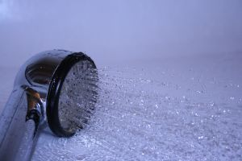

Puede realizarse en la ducha, la bañera o en la cama, en función
del grado de independencia del paciente.
4.1 Aseo en ducha o en bañera.
Suelen realizarlo aquellos usuarios que pueden levantarse.
La ducha tiene un efecto estimulante, mientras que el baño es más
relajante.
Con ello se contribuye a conseguir las finalidades descritas y a mantener
y estimular la independencia del usuario, así como a reforzar un
hábito de autocuidado saludable. |
|
 |
Deben cuidarse las medidas de de seguridad y los apoyos
materiales necesarios para determinados usuarios (ancianos y aquellos
que tienen limitaciones de movilidad). Así, por ejemplo, se utilizarán
alfombras antideslizantes, taburetes, barras de sujeción, asiento
de ducha o bañera, grúa, etcétera.
Además la ducha tiene una duración menor, y realiza una
limpieza por <<arrastre>>.Es un procedimiento muy cómodo
cuando el usuario necesita de mucha ayuda o tiene un nivel de dependencia
importante.
En ambos casos, debe existir un timbre, y el usuario no debe cerrar la
puerta por dentro.
- Recursos materiales
- Material para el aseo: jabón líquido, esponja o
manopla, peine, tijeras y colonia.
- Ropa de baño: una toalla para el cuerpo y otra para la
cara.
- Ropa para el paciente: camisón o pijama, bata y zapatillas
o la ropa de calle que se vaya a poner.
- Bolsa para la ropa sucia.
|